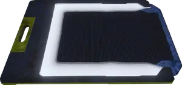

申购点 Slips
Requisition Slips

基本信息 信息
描述
货币 used for purchasing 战略配备.
Parent
货币
 申购点 Slips is a 货币 used in 绝地潜兵2 primarily for purchasing 战略配备.
申购点 Slips is a 货币 used in 绝地潜兵2 primarily for purchasing 战略配备.
获取途径
申购点 can be found on any 难度 in 多个 different ways.
The following methods can be used to obtain 申购点:
- New 玩家 start with 申购单 after basic training.
- 申购点 slips can be found within various 次要兴趣点 inside Pods, Cargo Containers, and Bunkers.
- Completing 主要 和 可选目标 will give a reward of 申购点.
- 正在撤离 will give a set amount of 申购点.
- The time 剩余 when 撤离 is completed will give additional 申购点 based on how long was left.
- The 难度 of the 任务 will give a 百分比 bonus to the 申购点 awarded.
- 主要命令 can offer 申购点 as a reward.
战术信息
- The 最大 amount that any one 绝地潜兵 can have in their 账户 is 申购单.
- Any 申购点 earned beyond this number is discarded.
- 舰船模块 begin requiring between 申购单 beginning with tier 4.
- the 主武器 配件 和 涂装 customization system 使用次数 申购单 同样。
- Excess 申购点 Slips may be donated to the Democracy Space 车站 to fund the 轨道武器 Blockade 战术行动.
琐事
- 申购点 Slips look like 未来 clipboards.
- Based on roughly five hours of testing, the chance to get the rare 已增加 申购点 Slips is speculated to be much higher than the 超级货币. Considering many more 1000 申购点 Slips were found than 超级货币. Regardless, there's 否 way to find the exact chance for either rare event, so all numbers are based purely on speculation.